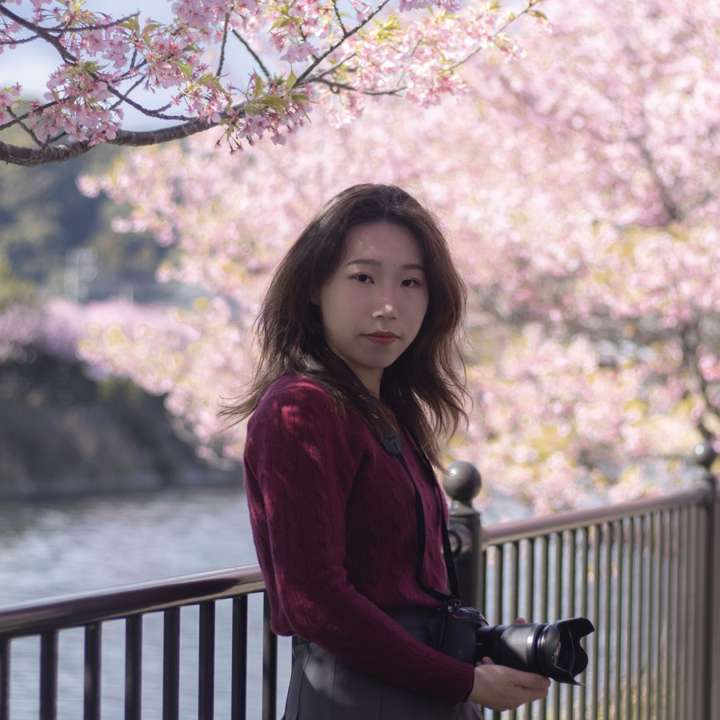
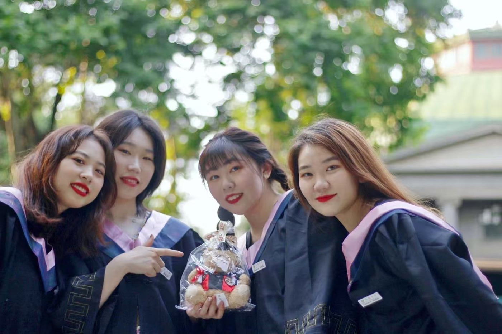
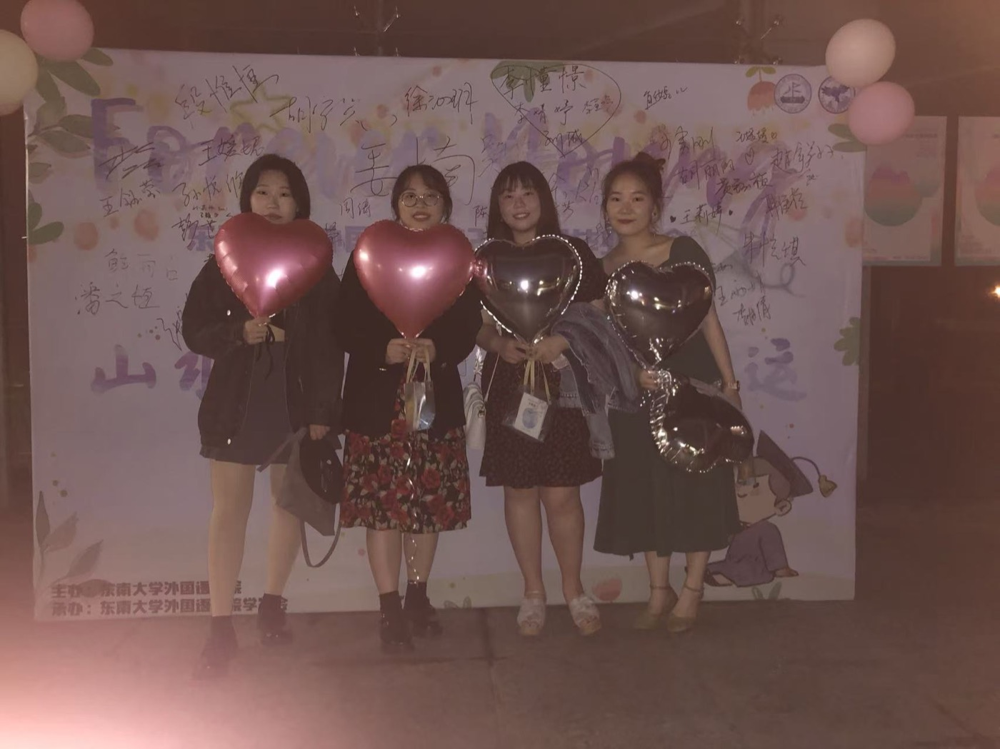
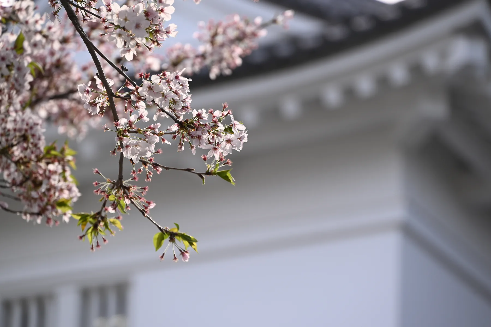
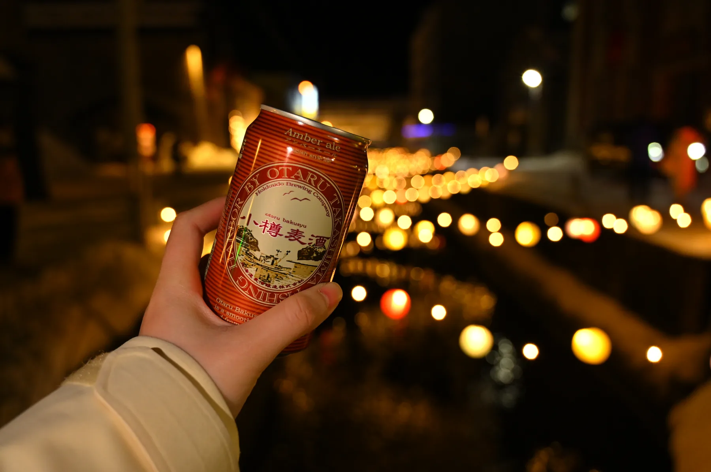
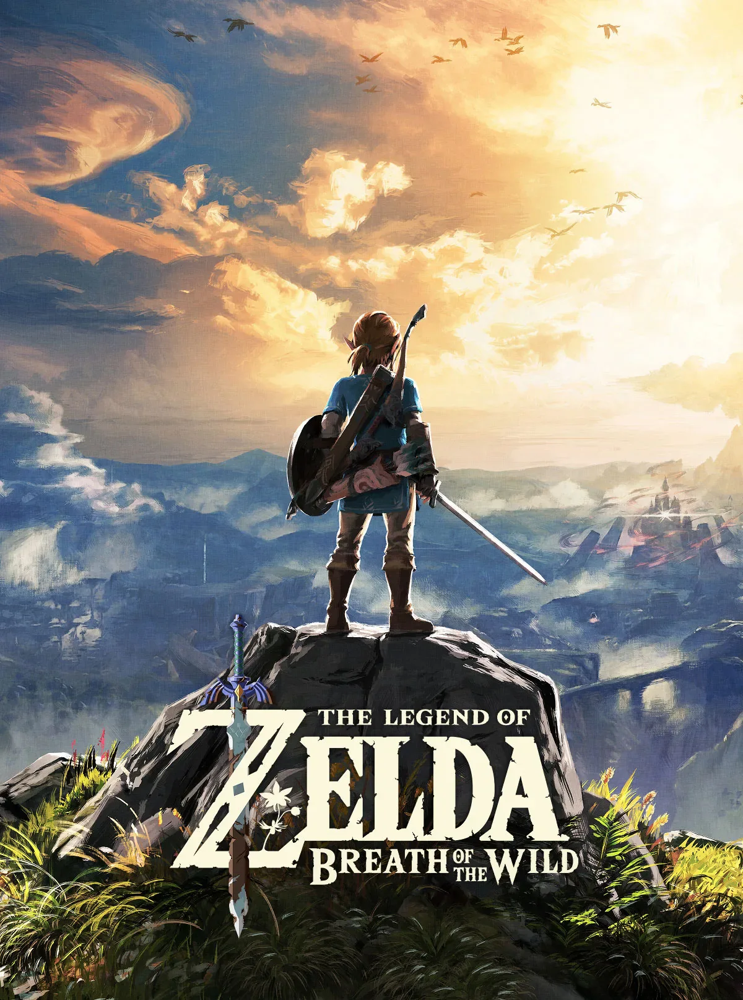

东南大学 · 日语（本科）
完成日语语言、文学与跨文化沟通的基础学习，形成长期面向日本语境工作的专业路径。

濮婉如One Thing To Remember

About
我擅长从日本用户理解出发，把调研、文案、本地化落地、活动转化和效果复盘串成完整流程。过往经历覆盖日本独立站运营、活动本地化、社群与 UGC 运营、SNS 内容运营、产品需求推进和跨部门协作。
Education & Japan Study
完成日语语言、文学与跨文化沟通的基础学习，形成长期面向日本语境工作的专业路径。
系统训练中日语言转换、文本理解与表达准确度，为本地化翻译、审校和术语库建设打下基础。
留学期间，我把课堂中的日本文化研究和日常生活中的观察连接起来：从公共交通、城市节庆、季节叙事到社交媒体表达，持续关注日本社会如何组织信息、情绪和参与感。


东南大学的校园记忆
Selected Work
Visual Portfolio
Interests
登山和滑雪让我习惯在不确定环境里做判断，也训练耐心、路线感和体能管理。
摄影和旅行是我感受世界的方式，我喜欢记录山野的呼吸、光影的流动，和那些稍纵即逝的生活片刻。

素描、古琴和诗词让我保持对留白、节奏和文字质感的敏感，适合沉入内容表达。

调酒像一场小型用户体验设计：配方、层次、容器和场景都要共同服务于情绪。

从玩家视角看任务节奏、世界观表达和社群氛围，也让我更自然地理解游戏社区运营里的参与动机。
Game Cards
Resume
Contact

Feedback
欢迎留下你对这个网站的评分和建议